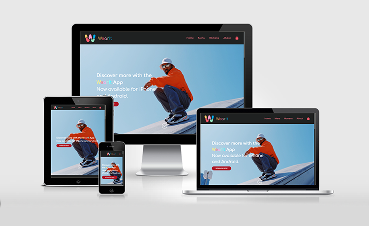

WearIt is a fictitious company made by my Project Management group in June 2021. Each team member was given a role of Project Manager, Designer, UI/UX and Developer. I took on the developer role as I wanted to get more practice with coding. The goal of the project was to go through the process of creating, designing and developing a website using the Waterfall Methodology.
Process
For the project I was required to code out two pages, one for the homepage and one for the email template. I was provided with mockups for both of these pages by our team designer. Both pages were similar in design however, I decided to start coding the homepage first, then the email template. I started coding for the desktop screen, then created breakpoints for all device types.
I opened up this project again, in October 2021, I first decided to make a few design changes. First to the homepage and by adding in some sections from the email template and a subscription box by the footer. Next I make mockups for the “Men's,” “Women's,” and “About” pages. I decided to refactor most of my code so that all pages would have similar behaviour and the code would be optimised and DRY.
Technologies &
Languages
- HTML5
- CSS